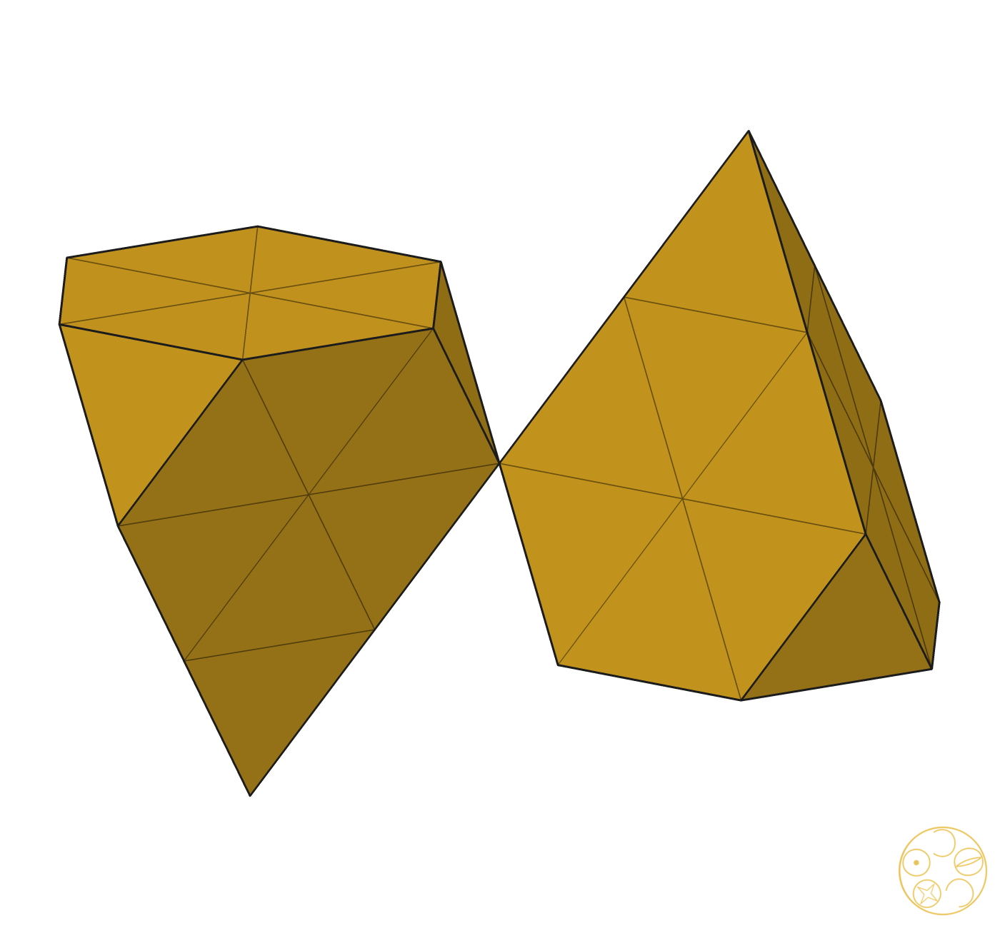
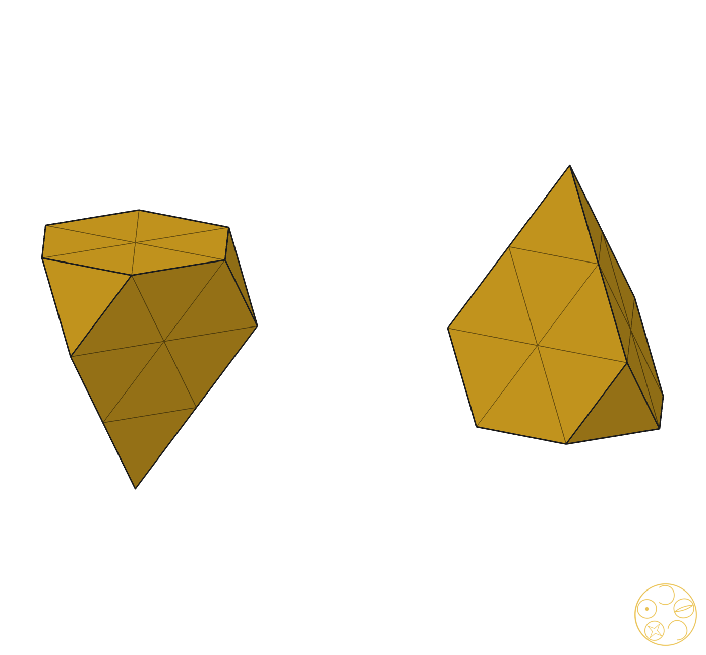
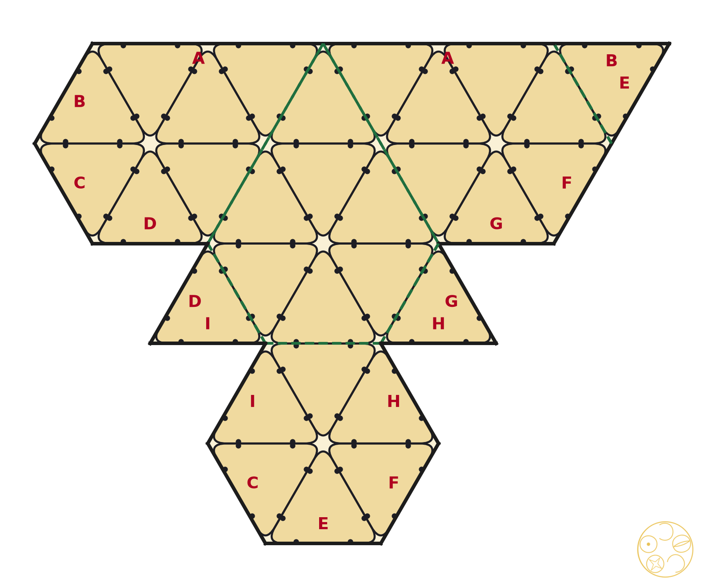
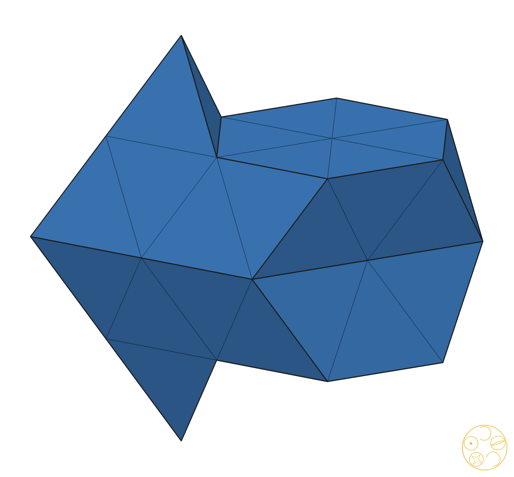
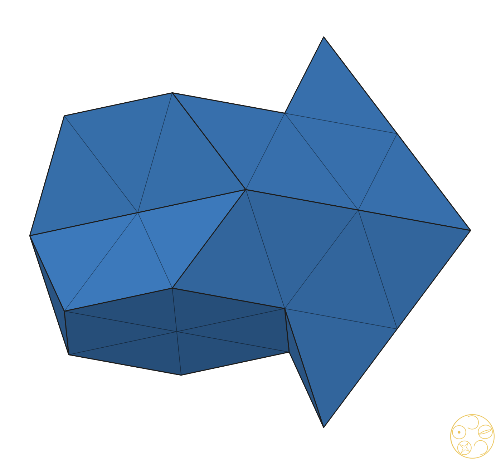
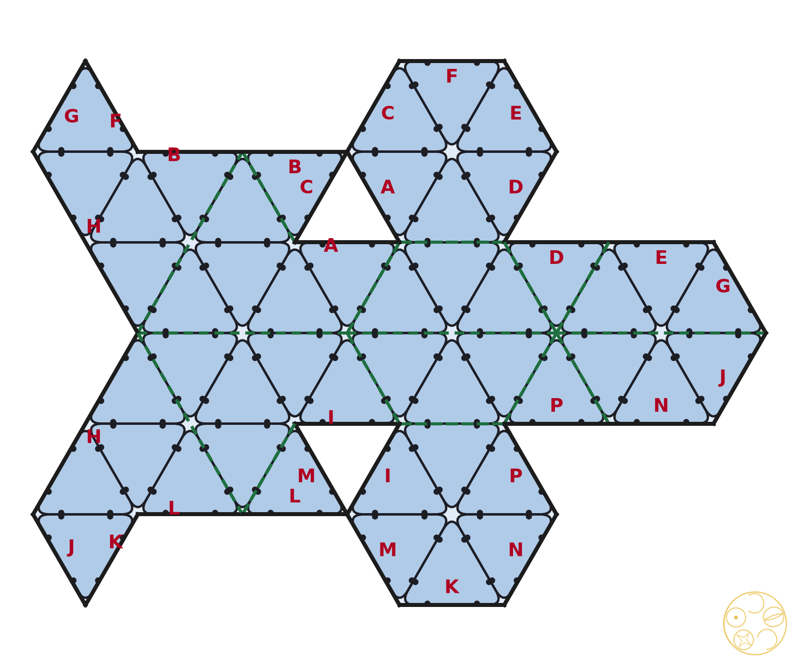

One c-tile and one h-tile of HexOct (#75), from PET-bottle-cap security rings, at double scale
A ring pulled tight into a triangle is a small equilateral triangle. Rings tied side to side make a flat sheet of triangles. A face of the tile can be built only if it is such a sheet.
Lengths are in ball spacings: the edge of a tetrahedron of the close packing is 1. DICTO's double scale makes the side of one ring triangle ½. So a unit triangle is 4 rings (three corner rings and one upside-down middle ring), and a regular hexagon of side 1 is 24 rings. A face can be laid with rings exactly when (a) every side runs in one of three directions 60° apart, (b) every side has a length that is a multiple of ½, and (c) all corners sit on one triangular grid of spacing ½. Squares, rhombi with 70.5° corners, and sides of length ⅓ all fail. The program tests (a)–(c) exactly, in fractions; the number of rings in a face is its area divided by the area of one ring triangle.
For each weight, the tile engine of #75 gives the four pieces of each tile with exact coordinates: the c-tile is layer 1 of ABC, the h-tile is layer 0 of AB. We join the pieces into one solid: on every plane we overlay the faces of all pieces, cancel the glued parts, and merge what is left into faces. This replaces the approximate merge of the first script (tilefaces.py), which took the convex hull of coplanar points. Two checks run at every weight: the volume of the joined solid equals the sum of the pieces, and every side of every face is shared by exactly two faces. Both pass at all 82 weights tested: a grid of step 1/96 over the whole walk (81 weights) and the book's weight 1/10.
| λ | weights | c-tile faces | c: ring faces | h-tile faces | h: ring faces |
|---|---|---|---|---|---|
| −11/24 | 1 | 20: 18 quad, 2 hex | 0/20 | 8: 6 quad, 2 hex | 0/8 |
| −43/96 … −3/8 | 8 | 20: 18 quad, 2 hex | 0/20 | 16: 8 tri, 2 hex, 6 heptagons | 0/16 |
| −35/96 … −29/96 | 7 | 32: 12 tri, 12 pent, 8 hex | 0/32 | 16: 8 tri, 2 hex, 6 heptagons | 0/16 |
| −7/24 | 1 | 32: 12 tri, 12 quad, 8 hex | 0/32 | 16: 8 tri, 6 pent, 2 hex | 8/16 |
| −9/32 … −13/96 | 15 | 38: 12 tri, 6 quad, 12 pent, 6 hex, 2 twelve-gons | 6/38 (at −1/4) | 24: 12 tri, 4 quad, 6 heptagons, 2 twelve-gons | 0/24 |
| −1/8 | 1 | 14: 6 tri, 6 pent, 2 hex | 14/14 | 14: 4 tri, 4 quad, 4 pent, 2 hex | 14/14 |
| −11/96 … 19/96 | 32 | 32: 12 tri, 6 quad, 14 hex | 6/32 (at 1/8) | 30: 8 tri, 6 quad, 4 pent, 12 hex | 0/30 |
| 5/24 | 1 | 32: 12 tri, 6 quad, 14 hex | 0/32 | 30: 8 tri, 10 quad, 4 pent, 8 hex | 0/30 |
| 7/32 … 35/96 | 15 | 32: 12 tri, 6 quad, 14 hex | 0/32 | 30: 8 tri, 4 quad, 10 pent, 8 hex | 0/30 |
| 3/8 | 1 | 12: 12 squares (two cubes) | 0/12 | 12: 6 tri, 6 quad | 0/12 |
The face pattern changes only at −3/8, −7/24, −1/8 and 5/24 (and the two ends); all are multiples of 1/24 and all are in the grid. Between two changes the face planes and side directions stay fixed, so the corner angles stay fixed too. Inside every open stretch at least 6 faces of each tile have a corner angle other than 60° or 120° (file angles.txt), so no weight inside a stretch can work. The weights where the pattern changes were all tested exactly. Hence λ = −1/8 is the only weight of the walk at which every face of both tiles can be built from rings. It also gives the fewest faces of any weight inside the walk: 14 for each tile. The book's weight λ = 1/10 is not buildable: none of its 32 + 30 faces can be laid with rings.
At λ = −1/8 the tetrahedral pieces are exactly the unit tetrahedra of the close packing, with balls at their corners. The octahedral pieces are exactly the unit octahedra. (From λ = −3/8 up to −1/8 the tetrahedral piece is a regular tetrahedron of edge 4(λ + 3/8); it reaches edge 1 at λ = −1/8.) So the tile is the classical one: two tetrahedra and two half-octahedra.
The octahedron halves are not square pyramids. The tile cuts each octahedron with the layer's middle plane, and this plane is parallel to two faces of the octahedron. The cut is a regular hexagon of side ½, not a square. A square cut needs a plane through four corners of the octahedron; in this layered setting no such plane is horizontal. The hexagons are outer faces of the tile: its top and bottom, where it meets the next tiles of a stack. No face of either tile is a square.
The c-tile is not one solid. Its four pieces form two towers: a half-octahedron with a tetrahedron on top, and a second tower that is the first one upside down. The two towers touch at one point only, the centre of layer L's ball. This is true at every weight tested, not only at −1/8: the two halves of the c-tile never share a side or a face. The h-tile is one solid at every weight.



| face of one tower | per tower | rings each | rings (tile) | shared sides inside each face | zip ties inside faces (tile) |
|---|---|---|---|---|---|
| pentagon, sides 1, 1, ½, ½, ½ (a unit triangle on a trapezoid) | 3 | 7 | 42 | 7 | 84 |
| regular hexagon, side ½ (the base) | 1 | 6 | 12 | 6 | 24 |
| small triangle, side ½ | 3 | 1 | 6 | 0 | 0 |
| c-tile (2 towers) | 7 each | 60 | 54 inside faces + 36 on the tower edges = 90 | 180 |
Every ring side is shared with one other ring, so a closed solid of N rings has 3N/2 shared sides and 3N zip ties. One tower: 30 rings, 45 shared sides, 90 ties. With the net of Figure 3, 35 shared sides (70 ties) are tied while the net lies flat and 10 (20 ties) when it is closed. Sizes, with s the side of one ring triangle: tetrahedron edge 2s, hexagon side s, tower height 2.45s.



| face | count | rings each | rings | shared sides inside each face | zip ties inside faces |
|---|---|---|---|---|---|
| pentagon, sides 1, 1, ½, ½, ½ (a unit triangle with one small triangle) | 4 | 5 | 20 | 4 | 32 |
| trapezoid, sides 1, ½, ½, ½ | 4 | 3 | 12 | 2 | 16 |
| regular hexagon, side ½ (top and bottom) | 2 | 6 | 12 | 6 | 24 |
| small triangle, side ½ | 4 | 1 | 4 | 0 | 0 |
| h-tile | 14 | 48 | 36 inside faces + 36 on the edges = 72 | 144 |
With the net of Figure 6, 56 shared sides (112 ties) are tied flat and 16 (32 ties) when the tile is closed. Height of the tile: 3.27s (two layers of the packing).
The difference in one sentence. The c-tile is two identical 30-ring towers that touch only at one corner, one upside down beside the other, while the h-tile is one 48-ring solid in which a double pyramid of two tetrahedra leans on a hexagon-topped slab of two octahedron halves.
Both hold the same volume: two tetrahedra and one octahedron. The c-tile has more surface (60 rings against 48) because its pieces are glued in pairs only, while in the h-tile every piece is glued to two others.
Conclusion. Build both tiles at λ = −1/8. It is the only weight of the walk where every face of both tiles is a sheet of ring triangles, and it gives the fewest faces (14 + 14). Nothing has to be left open or forced. The c-tile is 2 towers of 30 rings (60 rings, 90 shared sides, 180 zip ties); the h-tile is one solid of 48 rings (72 shared sides, 144 zip ties). Together: 108 rings and 324 zip ties.
Status: scan and build sheets done, exact; not for publication. Scripts: scan.py, angles.py, faces_at.py, build.py, tables.py, with the exact face module exactfaces.py; data in out/. Tile engine: #75 (tiles.py of studies/2026-10-29-endless-stack-cell).